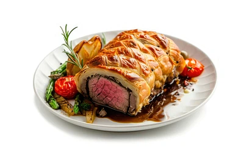

Beef Wellington Recipe
Home

a classic main dish made of tender beef tenderloin, mushroom duxelles, and puff pastry.
Ingredients needed
- center-cut beef tenderloin 2 lb (900 g)
- puff pastry 1 sheet (about 14 oz / 400 g), thawed if frozen
- mushrooms 1 lb (450 g), finely chopped
Steps to make Spaghetti
- Season the center-cut beef tenderloin with salt and pepper, then sear it in a hot pan until browned on all sides. Let it cool.
- Finely chop mushrooms and cook them until all the moisture evaporates, creating a thick mushroom paste (duxelles). Cool completely.
- Spread the mushroom mixture around the cooled beef (often with a layer of prosciutto, if using), then wrap it tightly in puff pastry. Seal the edges.
- Brush the pastry with beaten egg and bake at 400°F (200°C) for about 35–45 minutes, or until the pastry is golden and the beef reaches your desired doneness
- Let the Beef Wellington rest for 10–15 minutes before slicing. Serve with your favorite sauce and side dishes.